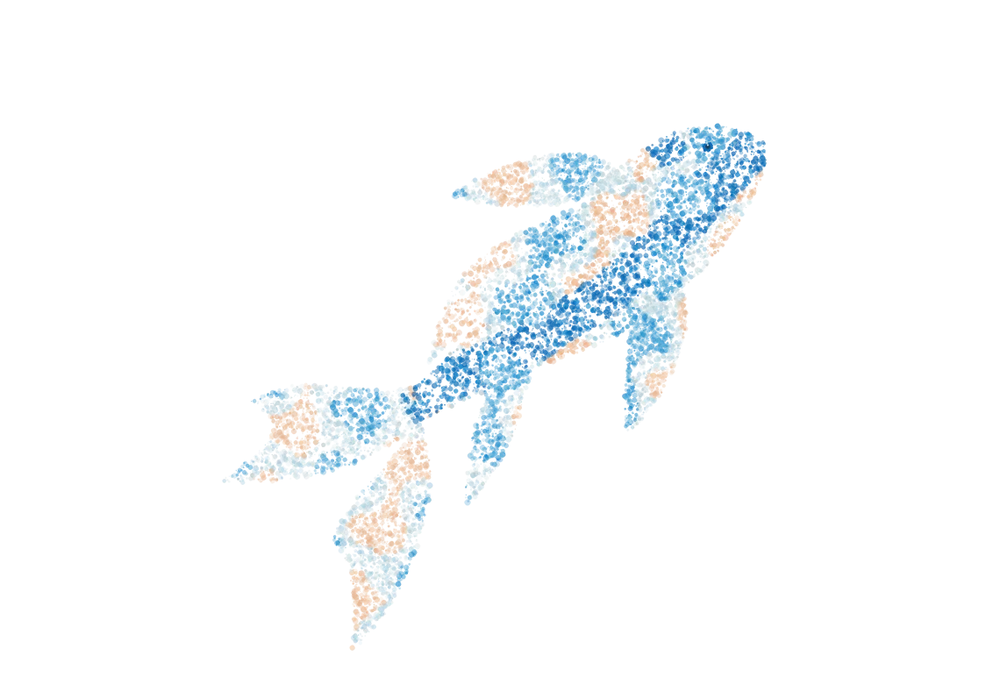

PREPRINTARXIV · 2026V2 · AUG 4
Where Reasoning Diverges: Localized Multi-Agent Debate for Multi-Hop Question Answering
Localized debate over conflicting reasoning steps, with guarded updates to a shared committed state.
Natural language processing · Language models · Agents
I’m a first-year master’s student at Nagoya University, with research interests in natural language processing, large language models, and AI agents.
I’m interested in understanding and shaping machine intelligence: developing more capable models, putting their abilities to practical use, and exploring how intelligence can take different forms through agents’ behavior, personality, and interaction. These interests guide my work on post-training and agent systems, as well as my exploration of multi-agent collaboration and character-driven agents.
Particle study / 001
An original generative sketch.
Many particles, one quiet current.

Localized debate over conflicting reasoning steps, with guarded updates to a shared committed state.
Understanding language model capabilities and exploring how post-training can improve them.
Building capable agents for practical tasks and exploring how character-driven agents behave and interact.
Exploring how multiple agents can communicate and work together effectively.
A personal assistant that combines conversation, proactive interaction, and background work across multiple channels.
A shopping-agent training pipeline that combines supervised fine-tuning with multi-turn reinforcement learning in a simulated environment.
从词汇概率到 KV cache，理解 latent communication 的接口、训练与证据。